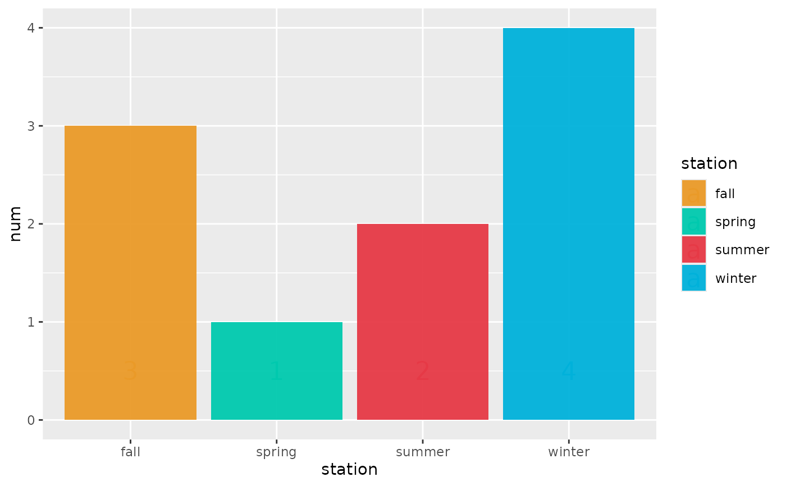
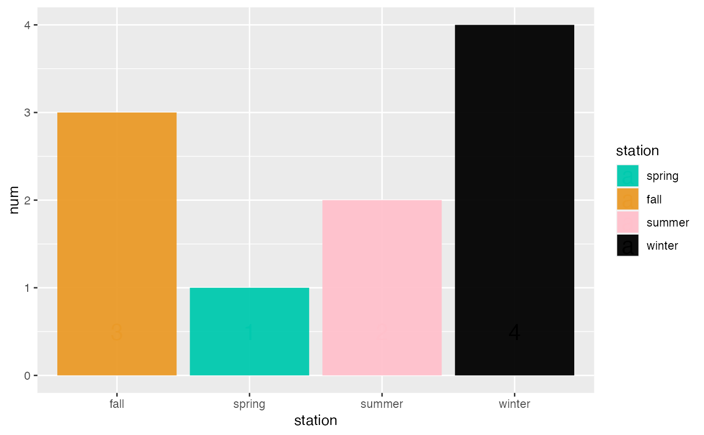
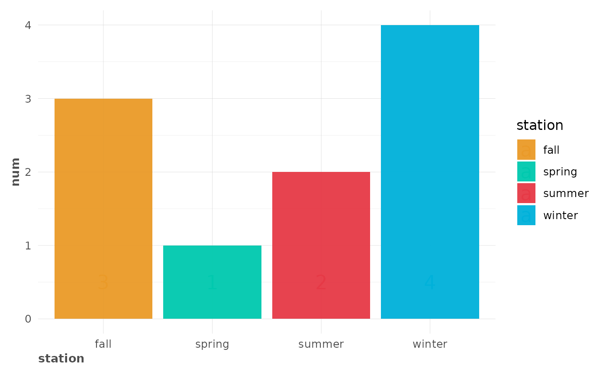

This function lets the user use pre-defined default colours.
Check your lares_pal()$labels scale. Feel free to use
gg_vals() to debug colours used in latest plot.
Usage
gg_fill_customs(column = "fill", ...)
gg_colour_customs(column = "colour", ...)
gg_text_customs(column = "colour", ...)
gg_vals(layer = "fill", column = layer)Arguments
- column
Character. Select any of "fill" or "colour" to use on your
lares_pal()$labelspalette.- ...
Allow additional parameters not used.
- layer
Character. Select any of "fill", "colour", or "label" to get the layer containing the colours labels you wish to colour.
Details
Notice that when the layer defined is any of GeomPoint, GeomLine,
GeomText or GeomLabel, gg_colour_customs() will force
column = "fill" parameter.
See also
Other Themes:
lares_pal(),
plot_palette(),
theme_lares()
Examples
library("ggplot2")
# Generic plot function to run examples to
run_plot <- function(add_fxs = TRUE) {
p <- data.frame(station = c("spring", "summer", "fall", "winter"), num = 1:4) %>%
ggplot(aes(x = station, y = num, fill = station)) +
geom_col() +
geom_text(aes(y = 0.5, label = num, colour = station), size = 6)
if (add_fxs) p <- p + gg_fill_customs() + gg_colour_customs()
return(p)
}
# Default colours
run_plot()

# Check last colours used
gg_vals("fill", "fill")
#> spring summer fall winter
#> "#A1BD4D" "#E63946" "#FF8303" "#40A4D8"
gg_vals("colour", "colour")
#> spring summer fall winter
#> "#A1BD4D" "#E63946" "#FF8303" "#40A4D8"
# Change any default colour
options("lares.colours.custom" = data.frame(
values = c("summer", "winter"),
fill = c("pink", "black"),
colour = c("black", "white")
))
run_plot()

# Check last colours used
gg_vals("fill", "fill")
#> spring fall summer winter
#> "#A1BD4D" "#FF8303" "pink" "black"
gg_vals("colour", "colour")
#> spring fall summer winter
#> "#A1BD4D" "#FF8303" "pink" "black"
# Reset to default colours
options("lares.colours.custom" = NULL)
# Notice you can use 'pal = 4' argument on theme_lares() too
run_plot(add_fxs = FALSE) + theme_lares(pal = 4)
